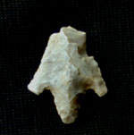
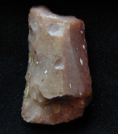
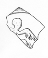

Pottery and Stone Tools from Pre-monastic Use of the Island
It is not known when the monastery at Psalmodi was founded, but the evidence for intensive occupation beginning around the middle of the fifth century AD would suggest that as a possible date. However, there is also evidence for earlier, less intensive use of the site, stretching back at least to the early Bronze Age.
Almost all of this material has been found as small, often eroded fragments redeposited in later contexts, so at present little can be said about the nature of the occupation or use of the site in these earlier periods.
The thumbnail illustrations on this page are linked to larger images that are at 1:1 scale when viewed on a monitor with 72 dpi resolution.
Prehistoric
Prehistoric pottery and chipped flint have been found sporadically in various locations, mostly redeposited but in one area in an apparent alluvial deposit that may be of prehistoric or protohistoric date. The pottery consists mostly of body sherds, with only a few clearly datable diagnostics. Prehistoric fabrics in this region have not been studied in detail; the wide variety at Psalmodi suggests that closer study may produce useful information. Tempering materials include calcite grit, quartz/mixed grit, calcite and shell, and quartz/mixed sand; surface treatments include plain, burnished, heavily burnished, smudged, and comb-impressed; firing varies from fully oxidized to fully reduced.
| | The earliest diagnostic piece is a Late Beaker (Epicampaniforme) handle, dating to the Early Bronze Age (c. 2000 BC). This is the only diagnostic piece of pre-Iron Age pottery on the site, but some of the other pieces may also be early, particularly the calcite-and-shell pottery. There is also a flint arrowhead of approximately the same date, and many of the other flint artifacts may be of this period. |
| | Rim of a large jar in a heavily burnished dark gray fabric; probably Iron Age (c. 700 to 50 BC). |
|  | Barbed-and-tanged flint projectile point, Beaker period (late Chalcolithic to early Bronze Age, c. 2500-1500 BC). |
| | A flint blade segment indicating the use of prepared core technology at this site. The lithic assemblage at Psalmodi includes a variety of reduction techniques, including blades, amorphous flake cores, and possibly bipolar reduction. |
|  | A sidescraper made on a rough, truncated blade-like flake. |
Protohistoric Imports
Some Greek and Roman imports are contemporary with Iron Age use of the site. These include Massaliot amphoras and painted ware from the Greek colony at Marseille and Campanian A tableware and "black sand" amphoras from Central Italy.
| | Bowl/cup with thickened rim in Claire Massaliète ware, with traces of reddish-brown paint on the lip, form 410, c. 450-200 BC |
| | Rim of a beaker in Gris Empuritana ware from northeastern Spain, form Cot-Cat Gb0, 325-50 BC. |
Early Roman
Use of the site in Early Imperial times is demonstrated by a variety of ceramic finds, generally to be dated between the late 1st and late 3rd centuries AD. So far nothing definitely from the late 1st century BC or early 1st century AD, such as Italian sigillata or early thin-walled types, has been found.
Wares present include South Gaulish sigillata, thin-walled cups, African Red Slip chiara A, African Red Slip cookware, Claire B sigillata, and Gauloise amphora, as well as regional commonwares such as "commune sableuse de Languedoc oriental" and "commune à engobe micacée".
| | Rim of a small dish in South Gaulish sigillata, form Drag 24/25b, AD 40-70. |
| | Body sherd of South Gaulish sigillata bowl with molded decoration. |
|  | Body sherd of South Gaulish sigillata bowl with molded decoration. |
| | Rim of a late Italian thin-walled cup, form Ricci 1/122, late first to third century AD. |
| | Rim of an African Red Slip (chiara A) bowl, form Hayes 8a, AD 75-160. |
| | Rim and base of a regional amphora, form Gauloise 4, AD 80-200. |
| | Rim of jar in "commune sableuse du Languedoc oriental" ware, form SABL-OR A7, AD 100-250. |
 | Rim of a Claire B bowl, form 8 or 35, AD 130-300. |
| | Rim of a pot in "commune à engobe micacée" ware, form COM-E-M A2, AD 200-300. |
{kind=link}
{kind=link}
{kind=link}
{kind=link}
{kind=link}
{kind=link}
{kind=link}
{kind=link}
{kind=link}
{kind=link}
{kind=link}
{kind=link}
{kind=link}
{kind=link}

{kind=link}